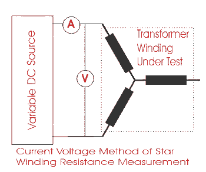
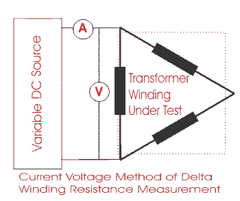
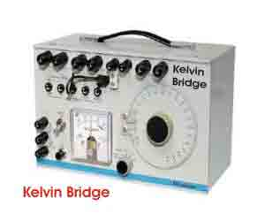
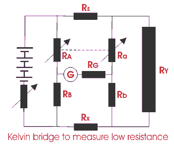
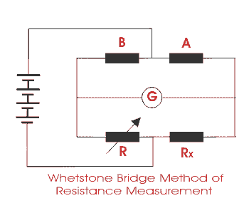

Transformer winding resistance measurement is carried out as a type test, routine test and also as a field test.
In the factory, it helps in determining the following :
- Calculation of the I2R losses in transformer.
- Calculation of winding temperature at the end of temperature rise test of transformer.
- As a benchmark for assessing possible damages in the field.
It is done at site in order to check for abnormalities due to loose connections, broken strands of conductor, high contact resistance in tap changers, high voltage leads and bushings.
Procedure of Transformer Winding Resistance Measurement
For star connected winding, the resistance shall be measured between the line and neutral terminal.
For star connected auto-transformers the resistance of the HV side is measured between HV terminal and IV terminal, then between IV terminal and the neutral.
For delta connected windings, measurement of winding resistance shall be done between pairs of line terminals. As in delta connection the resistance of individual winding can not be measured separately, the resistance per winding shall be calculated as per the following formula:
The resistance is measured at ambient temperature and then converted to resistance at 75˚C for all practical purposes of comparison with specified design values, previous results and diagnostics.
Winding Resistance at standard temperature of 75° C
Rt = Winding resistance at temperature t.
t = Winding temperature.
Generally transformer windings are immersed in insulation liquid and covered with paper insulation, hence it is impossible to measure the actual winding temperature in a de-energizing transformer at time of transformer winding resistance measurement. An approximation is developed to calculate temperature of winding at that condition, as follows
(Average temperature of insulating oil should be taken 3 to 8 hours after de-energizing transformer and when the difference between top & bottom oil temperatures becomes less than 5° C.)
The resistance can be measured by simple voltmeter ammeter method, Kelvin Bridge meter or automatic winding resistance measurement kit. (ohm meter, preferably 25 Amps kit)
Caution for voltmeter ammeter method: Current shall not exceed 15% of the rated electric current of the winding. Large values may cause inaccuracy by heating the winding and thereby changing its temperature and resistance.
NB: - Measurement of winding resistance of transformer shall be carried out at each tap.
Current Voltage Method of Measurement of Winding Resistance
The transformer winding resistances can be measured by electric current voltage method. In this method of measurement of winding resistance, the test electric current is injected to the winding and corresponding voltage drop across the winding is measured.
By applying simple Ohm's law i.e. Rx = V ⁄ I, one can easily determine the value of resistance.
Procedure of Current Voltage Method of Measurement of Winding Resistance
- Before measurement the transformer should be kept in OFF condition without excitation at least for 3 to 4 hours. During this time the winding temperature will become equal to its oil temperature.
- Measurement is done with D.C.
- To minimize observation errors, polarity of the core magnetization shall be kept constant during all resistance readings.
- Voltmeter leads shall be independent of the electric current leads to protect it from high voltages which may occur during switching on and off the electric current circuit.
- The readings shall be taken after the electric current and voltage have reached steady state values. In some cases this may take several minutes depending upon the winding impedance.
- The test electric current shall not exceed 15% of the rated electric current of the winding. Large values may cause inaccuracy by heating the winding and thereby changing its resistance.
- For expressing resistance, the corresponding temperature of the winding at the time of measurement must be mentioned along with resistance value. As we said earlier that after remaining in switch off condition for 3 to 4 hours, the winding temperature would become equal to oil temperature. The oil temperature at the time of testing is taken as the average of top oil and bottom oil temperatures of transformer.
- For star connected three phase winding, the resistance per phase would be half of measured resistance between two line terminals of the transformer.
- For delta connected three phase winding, the resistance per phase would be 0.67 times of measured resistance between two line terminals of the transformer.
- This electric current voltage method of measurement of winding resistance of transformer should be repeated for each pair of line terminals of winding at every tap position.
voltage method of measurement of star winding resistance" title="Current Voltage Method of measurement of Star winding resistance" class="alignleft"/>
voltage method of measurement of delta winding resistance" title="Current Voltage Method of measurement of Delta winding resistance" class="alignleft"/>
Bridge Method of Measurement of Winding Resistance

The main principle of bridge method is based on comparing an unknown resistance with a known resistance. When electric currents flowing through the arms of bridge circuit become balanced, the reading of galvanometer shows zero deflection that means at balanced condition no electric current will flow through the galvanometer. Very small value of resistance ( in milli-ohms range) can be accurately measured by Kelvin bridge method whereas for higher value Wheatstone bridge method of resistance measurement is applied. In bridge method of measurement of winding resistance, the errors is minimized.

The resistance measured by Kelvin bridge,
All other steps to be taken during transformer winding resistance measurement in these methods are similar to that of electric current voltage method of measurement of winding resistance of transformer, except the measuring technique of resistance.

The resistance measured by Wheatstone bridge,
 by
by